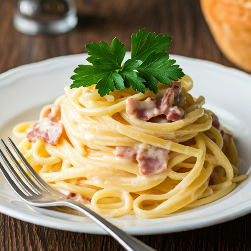
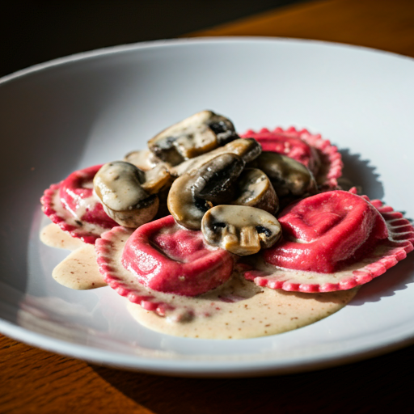

Fettuccine à Carbonara

Ingredientes:
- 500g de fettuccine
- 200g de guanciale ou pancetta
- 4 gemas de ovo
- 100g de queijo pecorino romano
- Pimenta-do-reino moída na hora
Modo de Preparo:
- Cozinhe a massa em água salgada al dente
- Frite o guanciale até ficar crocante
- Misture as gemas com o queijo ralado
- Combine tudo e finalize com pimenta
Ratatouille com Tagliatelle

Ingredientes:
- 500g de tagliatelle
- 2 berinjelas
- 3 abobrinha
- 2 pimentões
- Molho de tomate caseiro
Modo de Preparo:
- Prepare o molho de tomate
- Corte os legumes em rodelas finas
- Monte em camadas e asse
- Sirva sobre o tagliatelle cozido
Ravioli de Funghi

Ingredientes:
- Massa fresca para ravioli
- 300g de mix de cogumelos
- Ricota
- Manteiga e sálvia
- Parmesão
Modo de Preparo:
- Prepare o recheio de cogumelos
- Monte os raviolis
- Cozinhe em água salgada
- Finalize com manteiga e sálvia